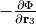

Here the detail of the command option –cutoff_pair or –cutoff_pair_distance is explained.
Using --cutoff_pair option, number of supercells with
displacements to be calculated is reduced. But of course this
sacrificed the accuracy of third-order force constants (fc3).
In phono3py, to fill elements of fc3 of a supercell, forces in many supercells having different pairs of displaced atoms are computed using some force-calculator such as ab-initio code. In the phono3py default behaviour, full elements of fc3 are computed. In this case, depending on the number of atoms in the supercell and the crystal symmetry, the configuration of atomic pairs can be huge and beyond our computational resource.
However fc3 interaction range among triplets of atoms may be short
enough. If it is the case, we may be allowed to omit computing some
elements of fc3. This is what achieved by --cutoff_pair option.
A fc3 element is made of three atoms in the supercell. Two of three are finitely displaced ( and ) but one of them is included in a force given by the force calculator (). The cutoff distance is defined as the upper bound of the distance between the former two atoms that are considered for the force calculations, i.e., the set of atomic pairs is selected. By this, when three distances among the three atoms of triplets are all larger than , those fc3 elements can not be obtained and so they are set to be zero.
-cutoff_pair option is employed when creating supercells with
displacements, therefore this option must be used with -d option
when running phono3py, for example for the Si example:
% phono3py --cutoff_pair=5 -d --dim="2 2 2" -c POSCAR-unitcell
_ _____
_ __ | |__ ___ _ __ ___|___ / _ __ _ _
| '_ \| '_ \ / _ \| '_ \ / _ \ |_ \| '_ \| | | |
| |_) | | | | (_) | | | | (_) |__) | |_) | |_| |
| .__/|_| |_|\___/|_| |_|\___/____/| .__/ \__, |
|_| |_| |___/
1.11.11
Run mode: displacements
Displacement distance: 0.03
Number of displacements: 111
Cutoff distance for displacements: 5.0
Number of displacement supercell files created: 51
_
___ _ __ __| |
/ _ \ '_ \ / _` |
| __/ | | | (_| |
\___|_| |_|\__,_|
% ls POSCAR-0*
POSCAR-00001 POSCAR-00032 POSCAR-00043 POSCAR-00080 POSCAR-00097
POSCAR-00002 POSCAR-00033 POSCAR-00070 POSCAR-00081 POSCAR-00098
POSCAR-00003 POSCAR-00034 POSCAR-00071 POSCAR-00082 POSCAR-00099
POSCAR-00016 POSCAR-00035 POSCAR-00072 POSCAR-00083 POSCAR-00100
POSCAR-00017 POSCAR-00036 POSCAR-00073 POSCAR-00084 POSCAR-00101
POSCAR-00018 POSCAR-00037 POSCAR-00074 POSCAR-00085 POSCAR-00102
POSCAR-00019 POSCAR-00038 POSCAR-00075 POSCAR-00086 POSCAR-00103
POSCAR-00024 POSCAR-00039 POSCAR-00076 POSCAR-00087
POSCAR-00025 POSCAR-00040 POSCAR-00077 POSCAR-00088
POSCAR-00026 POSCAR-00041 POSCAR-00078 POSCAR-00089
POSCAR-00027 POSCAR-00042 POSCAR-00079 POSCAR-00096
% ls POSCAR-0*|wc -l
51
Number of displacements: 111 shows the number of supercells with
displacements when this is run without --cutoff_pair
option. Number of displacement supercell files created: 51 gives
the contracted number of supercells with displacements by
--cutoff_pair option. There number of POSCAR-0xxxx files is found
51. At this step, a special disp_fc3.yaml is created. This
contains information on this contraction and used in the other
calculation step, therefore this file must be kept carefully.
POSCAR-xxxxx (in the other calculator interface, the prefix of the
filename is different) are not generated if distance between a pair of
atoms to be displaced is larger than the specified cutoff pair
distance. The indexing number (xxxxx) corresponds to that of the
case without setting this option, i.e., the same POSCAR-xxxxx
files are created for the same configurations of pairs of
displacements but POSCAR-xxxxx files not being included are not
generated. The reason of this indexing is that it can be useful when
changing the cutoff-pair-distance.
disp_fc3.yaml¶Using -cutoff_pair option together with -d option, a special
disp_fc3.yaml is created. This contains information on distances
between displaced atomic-pairs and whether those pairs are to be
computed or not. This special disp_fc3.yaml is necessary to create
fc3, therefore be careful not to overwrite it by running the option
-d without -cutoff_pair or with different -cutoff_pair
with different value.
FORCES_FC3¶To create FORCES_FC3, only output files of the supercells created
using --cutoff_pair option are passed to phono3py as the
arguments. The special disp_fc3.yaml file is necessary to be
located at current directory.
An example is shown below for the Si example. Here, it is supposed
that forces are calculated using VASP in disp-xxxxx
directories. After running force calculations, there should be the
output file containing forces in each directory (for VASP
vasprun.xml).
% phono3py --cf3 disp-{00001,00002,00003,00016,00017,00018,00019,00024,00025,00026,00027,00032,00033,00034,00035,00036,00037,00038,00039,00040,00041,00042,00043,00070,00071,00072,00073,00074,00075,00076,00077,00078,00079,00080,00081,00082,00083,00084,00085,00086,00087,00088,00089,00096,00097,00098,00099,00100,00101,00102,00103}/vasprun.xml
_ _____
_ __ | |__ ___ _ __ ___|___ / _ __ _ _
| '_ \| '_ \ / _ \| '_ \ / _ \ |_ \| '_ \| | | |
| |_) | | | | (_) | | | | (_) |__) | |_) | |_| |
| .__/|_| |_|\___/|_| |_|\___/____/| .__/ \__, |
|_| |_| |___/
1.11.7
Displacement dataset is read from disp_fc3.yaml.
counter (file index): 1 2 3 4 5 6 7 8 9 10 11 12 13 14 15 16 17 18 19 20 21 22 23 24 25 26 27 28 29 30 31 32 33 34 35 36 37 38 39 40 41 42 43 44 45 46 47 48 49 50 51
FORCES_FC3 has been created.
_
___ _ __ __| |
/ _ \ '_ \ / _` |
| __/ | | | (_| |
\___|_| |_|\__,_|
Using –cf3_file option may be recommended when the number of force files is large.
% for i in `ls POSCAR-0*|sed s/POSCAR-//`;do echo disp-$i/vasprun.xml;done > file_list.dat
% phono3py --cf3_file file_list.dat
Using a python script, disp_fc3.yaml is easily parsed. So
it is also easy to create the file list by a python
script:
#!/usr/bin/env python
import yaml
file_name_tmpl = "disp-%05d/vasprun.xml"
dds = yaml.load(open("disp_fc3.yaml"))
count = 1
for d1 in dds['first_atoms']:
print(file_name_tmpl % count)
count += 1
for d1 in dds['first_atoms']:
for d2 in d1['second_atoms']:
for d in d2['displacements']:
if d2['included']:
print(file_name_tmpl % count)
count += 1
To create fc3, --cutoff_pair option is not necessary but the
special disp_fc3.yaml is required.
% phono3py --dim="2 2 2" -c POSCAR-unitcell
...
Displacement dataset is read from disp_fc3.yaml.
Sets of supercell forces are read from FORCES_FC3.
Solving fc3[ 1, x, x ] with a displacement:
[ 0.0300 0.0000 0.0000]
Expanding fc3
Cutting-off fc3 (cut-off distance: 5.000000)
Building atom mapping table...
Creating contracted fc3...
Writing fc3 to fc3.hdf5
max drift of fc3: 0.043921 (zyx) 0.043921 (yzx) 0.043921 (yxz)
Solving fc2
Writing fc2 to fc2.hdf5
max drift of fc2: -0.000001 (xx) -0.000001 (xx)
*************** None of ph-ph interaction was calculated. ****************
_
___ _ __ __| |
/ _ \ '_ \ / _` |
| __/ | | | (_| |
\___|_| |_|\__,_|
Once fc3.hdf5 and fc2.hdf5 are created, --cutoff_pair
option and the special disp_fc3.yaml are not needed anymore.
% phono3py --dim="2 2 2" --pa="0 1/2 1/2 1/2 0 1/2 1/2 1/2 0" -c POSCAR-unitcell --mesh="11 11 11" --fc3 --fc2 --br
...
300.0 118.778 118.778 118.778 -0.000 -0.000 0.000
...
For testing, thermal conductivities with respect to --cutoff_pair
values are calculated as follows. Note that if FORCES_FC3 for full
fc3 elements exists, the same FORCES_FC3 file can be used for
generating contracted fc3 for each special disp_fc3.yaml.
% egrep '^\s+distance' disp_fc3.yaml|awk '{print $2}'|sort|uniq
0.000000
2.366961
3.865232
4.532386
5.466263
5.956722
6.694777
7.100884
7.730463
9.467845
% for i in {2..10};do d=`grep distance disp_fc3.yaml|awk '{print $2}'|sort|uniq|sed "${i}q;d"`; d=$((d+0.1)); phono3py --cutoff_pair=$d -o $i -d --dim="2 2 2" -c POSCAR-unitcell ;done
% ls disp_fc3.*.yaml
disp_fc3.10.yaml disp_fc3.4.yaml disp_fc3.7.yaml
disp_fc3.2.yaml disp_fc3.5.yaml disp_fc3.8.yaml
disp_fc3.3.yaml disp_fc3.6.yaml disp_fc3.9.yaml
% for i in {2..10};do grep num_displacements_created disp_fc3.$i.yaml;done
num_displacements_created: 11
num_displacements_created: 31
num_displacements_created: 51
num_displacements_created: 56
num_displacements_created: 76
num_displacements_created: 96
num_displacements_created: 104
num_displacements_created: 109
num_displacements_created: 111
% for i in {2..10};do phono3py --dim="2 2 2" --pa="0 1/2 1/2 1/2 0 1/2 1/2 1/2 0" -c POSCAR-unitcell --mesh="11 11 11" --br --io=$i|tee std.$i.out;done
% for i in {2..10};do egrep '^\s+300' std.$i.out;done
300.0 123.559 123.559 123.559 -0.000 -0.000 0.000
300.0 118.586 118.586 118.586 -0.000 -0.000 0.000
300.0 118.778 118.778 118.778 -0.000 -0.000 0.000
300.0 118.839 118.839 118.839 -0.000 -0.000 0.000
300.0 119.433 119.433 119.433 -0.000 -0.000 0.000
300.0 119.453 119.453 119.453 -0.000 -0.000 0.000
300.0 119.466 119.466 119.466 -0.000 -0.000 0.000
300.0 119.447 119.447 119.447 -0.000 -0.000 0.000
300.0 119.445 119.445 119.445 -0.000 -0.000 0.000
% for i in {2..10};do phono3py --dim="2 2 2" --pa="0 1/2 1/2 1/2 0 1/2 1/2 1/2 0" -c POSCAR-unitcell --mesh="11 11 11" --sym_fc3r --sym_fc2 --tsym --br -i $i -o sym-$i|tee std.sym-$i.out;done
% for i in {2..10};do egrep '^\s+300' std.sym-$i.out;done
300.0 124.626 124.626 124.626 -0.000 0.000 0.000
300.0 119.721 119.721 119.721 -0.000 0.000 0.000
300.0 118.806 118.806 118.806 -0.000 0.000 0.000
300.0 118.741 118.741 118.741 -0.000 0.000 0.000
300.0 119.446 119.446 119.446 -0.000 0.000 0.000
300.0 119.339 119.339 119.339 -0.000 0.000 0.000
300.0 119.323 119.323 119.323 -0.000 0.000 0.000
300.0 119.313 119.313 119.313 -0.000 0.000 0.000
300.0 119.311 119.311 119.311 -0.000 0.000 0.000
% egrep '^\s+distance' disp_fc3.yaml|awk '{print $2}'|sort|uniq
0.000000
1.889907
1.901086
3.069402
3.076914
3.111000
3.640065
3.645881
4.370303
4.375582
4.743307
4.743308
4.788360
4.978000
5.364501
5.388410
5.672503
5.713938
5.870162
6.205027
6.469591
7.335901
% for i in {2..22};do d=`egrep '^\s+distance' disp_fc3.yaml|awk '{print $2}'|sort|uniq|sed "${i}q;d"`; d=$((d+0.0001)); phono3py --cutoff_pair=$d -o $i -d --dim="3 3 2" -c POSCAR-unitcell ;done
% for i in {2..22};do grep num_displacements_created disp_fc3.$i.yaml;done
num_displacements_created: 78
num_displacements_created: 98
num_displacements_created: 202
num_displacements_created: 222
num_displacements_created: 318
num_displacements_created: 370
num_displacements_created: 466
num_displacements_created: 570
num_displacements_created: 666
num_displacements_created: 718
num_displacements_created: 718
num_displacements_created: 770
num_displacements_created: 790
num_displacements_created: 894
num_displacements_created: 934
num_displacements_created: 986
num_displacements_created: 1026
num_displacements_created: 1122
num_displacements_created: 1162
num_displacements_created: 1214
num_displacements_created: 1254
% for i in {2..22};do phono3py --dim="3 3 2" -c POSCAR-unitcell --mesh="13 13 9" --br --nac --io $i|tee std.$i.out; done
% for i in {2..22};do egrep '^\s+300\.0' std.$i.out;done
300.0 201.530 201.530 192.685 -0.000 -0.000 -0.000
300.0 212.963 212.963 204.362 -0.000 -0.000 -0.000
300.0 208.005 208.005 196.684 -0.000 -0.000 -0.000
300.0 212.213 212.213 200.778 -0.000 -0.000 -0.000
300.0 223.019 223.019 214.702 -0.000 -0.000 -0.000
300.0 223.181 223.181 214.351 -0.000 -0.000 -0.000
300.0 222.360 222.360 213.924 -0.000 -0.000 -0.000
300.0 223.245 223.245 214.561 -0.000 -0.000 -0.000
300.0 223.812 223.812 215.359 -0.000 -0.000 -0.000
300.0 223.959 223.959 215.701 -0.000 -0.000 -0.000
300.0 223.959 223.959 215.701 -0.000 -0.000 -0.000
300.0 224.507 224.507 215.384 -0.000 -0.000 -0.000
300.0 224.278 224.278 215.396 -0.000 -0.000 -0.000
300.0 223.551 223.551 212.671 -0.000 -0.000 -0.000
300.0 224.732 224.732 214.463 -0.000 -0.000 -0.000
300.0 224.291 224.291 213.270 -0.000 -0.000 -0.000
300.0 224.805 224.805 214.771 -0.000 -0.000 -0.000
300.0 224.834 224.834 215.025 -0.000 -0.000 -0.000
300.0 224.645 224.645 215.260 -0.000 -0.000 -0.000
300.0 224.769 224.769 215.220 -0.000 -0.000 -0.000
300.0 224.650 224.650 215.090 -0.000 -0.000 -0.000
% for i in {2..22};do phono3py --dim="3 3 2" -c POSCAR-unitcell --mesh="13 13 9" --sym_fc3r --sym_fc2 --tsym --br --nac -i $i -o sym-$i|tee std.sym-$i.out; done
% for i in {2..22};do egrep '^\s+300\.0' std.sym-$i.out;done
300.0 224.122 224.122 213.086 0.000 -0.000 0.000
300.0 225.394 225.394 215.683 0.000 -0.000 0.000
300.0 223.748 223.748 213.682 0.000 -0.000 0.000
300.0 223.973 223.973 213.543 0.000 -0.000 0.000
300.0 224.876 224.876 216.489 0.000 -0.000 0.000
300.0 224.603 224.603 216.204 0.000 -0.000 0.000
300.0 223.773 223.773 214.657 0.000 -0.000 0.000
300.0 224.173 224.173 215.517 0.000 -0.000 0.000
300.0 224.596 224.596 215.896 0.000 -0.000 0.000
300.0 224.401 224.401 215.955 0.000 -0.000 0.000
300.0 224.401 224.401 215.955 0.000 -0.000 0.000
300.0 224.077 224.077 215.565 0.000 -0.000 0.000
300.0 224.285 224.285 215.654 0.000 -0.000 0.000
300.0 224.136 224.136 215.053 0.000 -0.000 0.000
300.0 224.469 224.469 215.462 0.000 -0.000 0.000
300.0 224.109 224.109 215.011 0.000 -0.000 0.000
300.0 224.108 224.108 215.447 0.000 -0.000 0.000
300.0 224.592 224.592 215.046 0.000 -0.000 0.000
300.0 224.640 224.640 215.113 0.000 -0.000 0.000
300.0 224.344 224.344 215.203 0.000 -0.000 0.000
300.0 224.481 224.481 214.936 0.000 -0.000 0.000